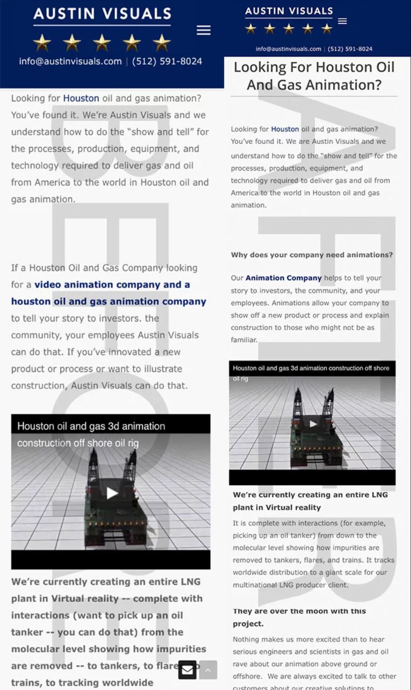
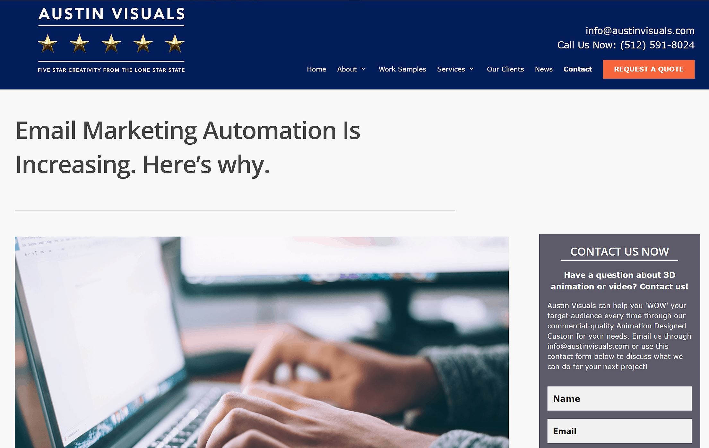
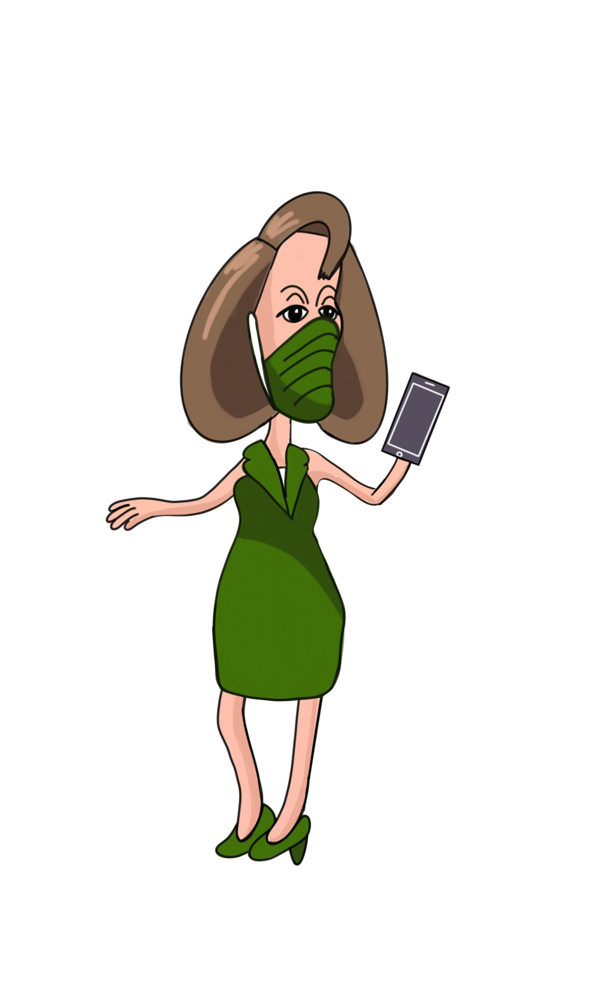
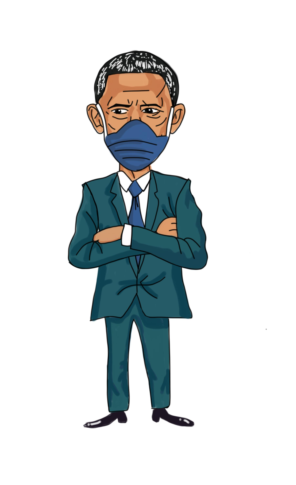
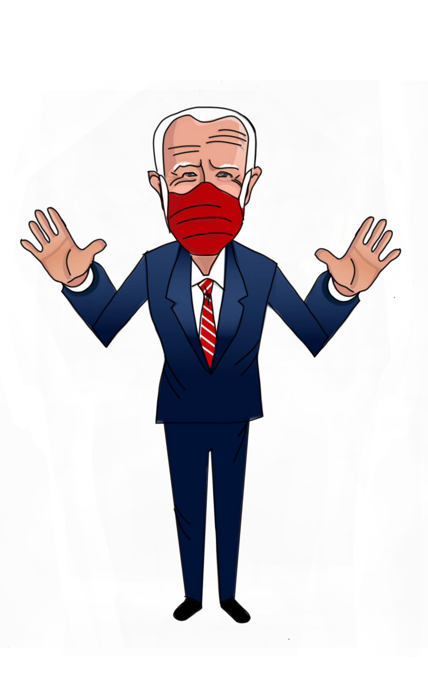
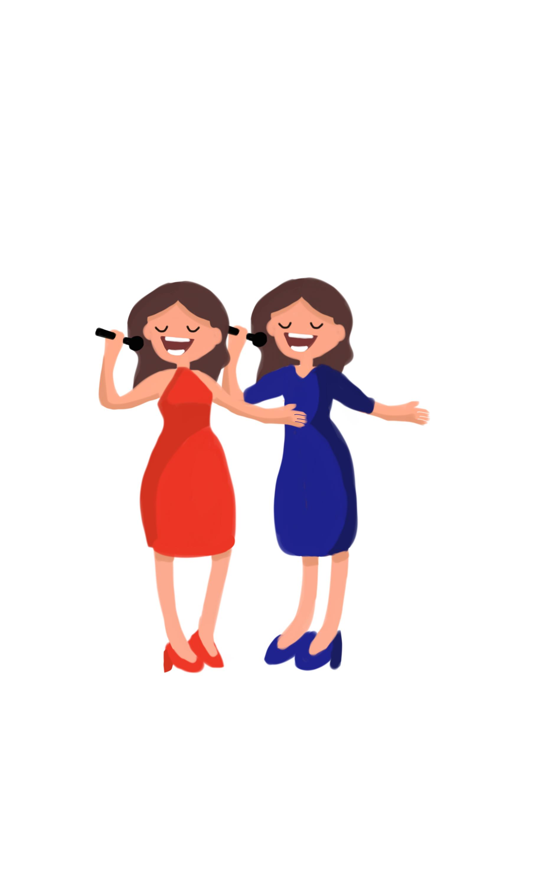

Austin Visuals
Sydney Kit interned for Austin Visuals from September 2019 - October 2020 and worked for them from July 2021 - current.
Work
In progress. Come back later!
Internship
Responsibilities
While interning for Austin Visuals, Sydney Kit created company commericals, edited blog posts, managed company social media, and worked with customers to create unique videos.
Company Commercial
Storyboards, script, video, editing, and selecting the voiceover actor were all done by Sydney Kit.
Blog Posts
Blog posts were edited for clarity, grammar fixes, and readability. Blog posts were also created.
 Managed Company Social Media
Facebook posts were created, scheduled in advance, and stylized with unique graphics.
.gif)
.gif)
.jpg)
.jpg)
.gif)
Worked With Customers To Create Unique Videos
Customer wanted a music video for a rap about stimulus checks. The project was cancelled midway.
The following video is a rough draft that did not make it to editing and experienced rendering issues. The audio does not belong to Sydney Kit.
Characters created for the video:
   